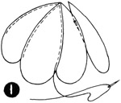
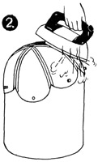
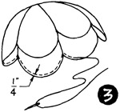
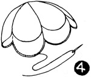

1952—How to Make Hats
by Ruby Carnahan
Scalloped Calot
MATERIAL REQUIRED
- 3/8 yard any material
- 3/8 yard crinoline
- 3/8 yard sized honeycomb
- 1 yard bead trimming
CUTTING CALOT
Cut three large sections and three small sections of material, crinoline and honeycomb for lining.
SEWING
(Illus. 1) Lay material sections on corresponding crinoline sections and baste together. Join sections together alternately—a large section and a small section—and stitch, making a 1/4" seam.
BLOCKING
Pull on headblock with material side next to block. (Illus. 2) Steam press each seam open and pin bottom edge of calot to block. Allow to dry on block.
(Illus. 3) When dry, remove from block and baste 1/4" hem around each scallop. Steam press hem.
LINING
Stitch lining sections together alternately as above. Pull lining over block and steam press each seam open. Pm bottom edge of lining to block and let dry on block. When dry, slip calot on block over lining, matching scallops of calot and lining, and pin together. Turn edge of lining under around scallops and slip stitch lining to bottom of calot. (Illus. 4) Pin pearl trimming around edge of scallops and sew, using overcast stitch.